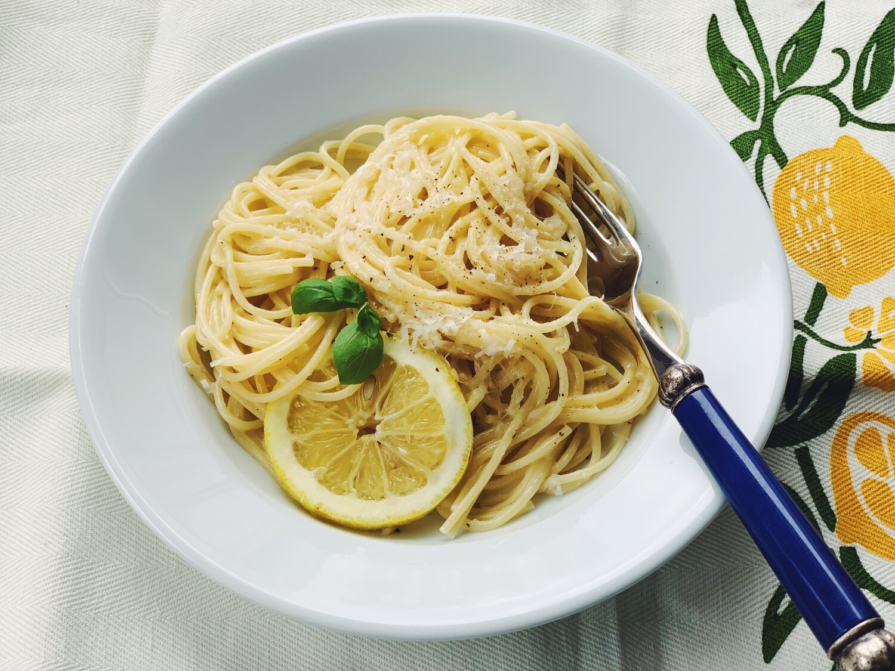

Ingredients
- 1 lemon
- 12 oz. spaghetti or other long pasta
- Kosher salt
- 3/4 cup heavy cream
- 6 Tbsp. unsalted butter
- 3 oz. finely grated Parmesan (about 3/4 cup)
- Freshly ground black pepper
Recipe Preperation
- Step 1: Using a vegetable peeler, remove two 2"-long strips of zest from 1 lemon. Thinly slice each strip lengthwise into thin strands; set aside for serving. Finely grate remaining lemon zest into a large pot (like a Dutch oven). Cut zested lemon in half and squeeze out enough fresh lemon juice to yield 2 Tbsp. into a small bowl; set aside.
- Step 2: Cook 12 oz. spaghetti or other long pasta in another large pot of boiling heavily salted water according to package directions, stirring occasionally, until very al dente (pasta will finish cooking in the sauce).
- Step 3: Meanwhile, add ¾ cup heavy cream to pot with lemon zest and cook over medium heat, whisking often, until liquid is just beginning to simmer, about 2 minutes. Reduce heat to medium-low. Whisk in 6 Tbsp. unsalted butter, 1 Tbsp. at a time, until melted and sauce is creamy and emulsified. Remove from heat.
- Step 4: Just before pasta is al dente, scoop out 1½ cups pasta cooking liquid. Add ¾ cup pasta cooking liquid to cream sauce and return to medium heat. Using tongs, transfer spaghetti to pot with sauce (it’s okay if a little water comes along with it). Cook pasta, tossing often and adding 3 oz. finely grated Parmesan (about ¾ cup) little by little, until cheese is melted and sauce is creamy, about 3 minutes. Remove from heat and stir in reserved lemon juice. If sauce looks tight, add 1–2 Tbsp. more pasta cooking liquid (cream sauces tighten up very quickly as they cool, so it’s better to lean on the saucier side of things). Season with more salt, if needed.
- Step 5: Divide pasta among bowls. Season with freshly ground black pepper, then garnish with reserved lemon zest strips.